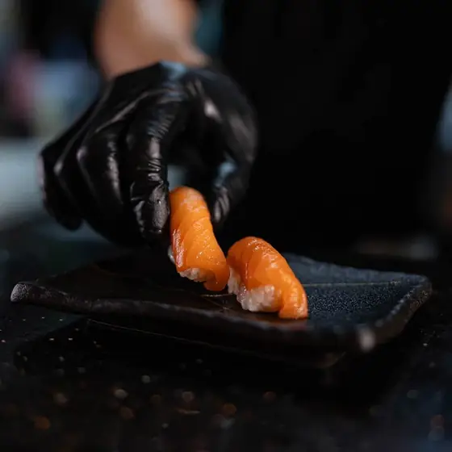
Nigiri de salmón
2 piezas
Kaisen Experience Portugalete, en el Centro Comercial Ballonti y a 15 minutos de Bilbao. Más de 80 elaboraciones que pides desde la mesa y te llegan recién hechas.
Todos los días
13:00-16:30 y 20:00-23:30, también festivos.
Desde 22,95 €
Mediodía de lunes a viernes, comiendo sin límite.
Brasa Josper
Carnes, pulpo y marisco al carbón, además del sushi.
Parking gratis
El del C.C. Ballonti. Metro: línea 2, Portugalete.
Aquí no hay bandejas que se enfrían. Pides lo que te apetece, cuando te apetece, y cada plato sale de cocina en ese momento.
Cada mesa tiene su tablet con la carta completa: sushi, brasa, plancha, salteados y fritos.
El sushi se monta al momento y lo de la brasa sale directo del Josper a tu mesa.
Pide las rondas que quieras. Recomendamos unos 5 platos por persona en cada ronda, para disfrutar sin desperdiciar.
La cocina sirve de 13:00 a 16:00 y de 20:00 a 23:00. El local sigue abierto media hora más para que termines con calma.
Lo que pagas depende del turno. Los niños tienen su propio menú según altura.
| Turno | Adulto | Niños 100-140 cm |
|---|---|---|
| MediodíaLunes a viernes | 22,95 € | 12,95 € |
| NocheLunes a jueves | 26,50 € | 13,95 € |
| Fin de semana y festivosViernes noche, sábado, domingo, festivos y vísperas | 30,95 € | 14,95 € |
Así es la carta que tendrás en la tablet de la mesa. Toca cualquier plato para verlo en grande con sus alérgenos. Si tienes alguna alergia, usa el filtro.
Ocultar los platos que contienen:
Filtro orientativo según la carta del restaurante. Todo se cocina en la misma cocina: confirma siempre con el personal de sala.
Nigiris, gunkan, californias, makis, hosomakis fritos, futomakis, onigiris y temakis, montados al momento.

Nigiri de salmón
2 piezas
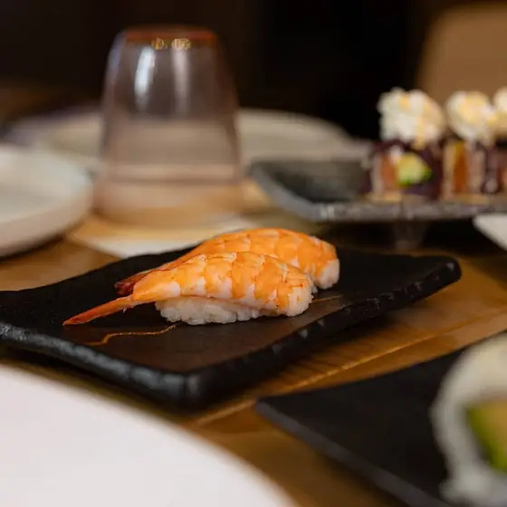
Nigiri de gamba
2 piezas
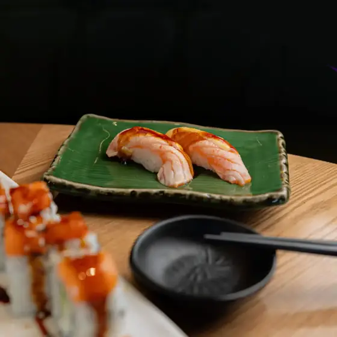
Nigiri de salmón flameado
2 piezas
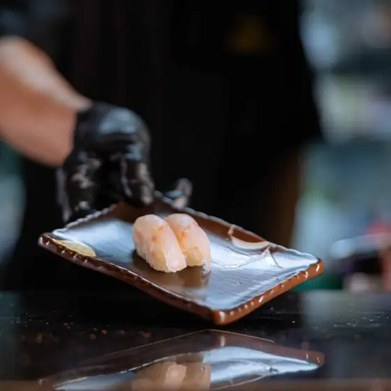
Nigiri de lubina
2 piezas
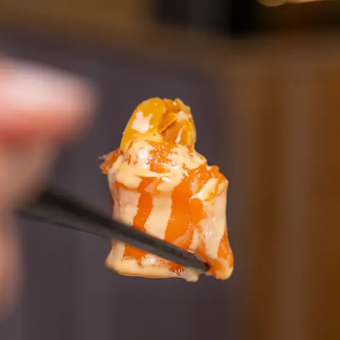
Gunkan de salmón con mayonesa y almendras
2 piezas
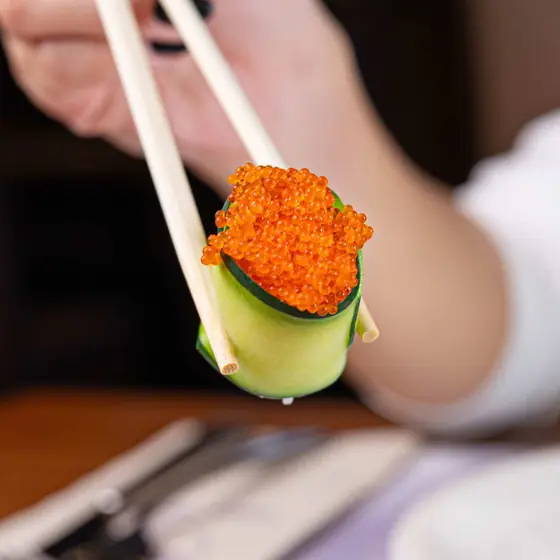
Gunkan calabacín masago
2 piezas
Gunkan de calabacín, con masago.
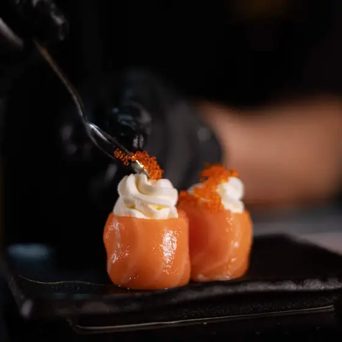
Gunkan de salmón Philadelphia
2 piezas
Gunkan de queso tocado de almendra
2 piezas
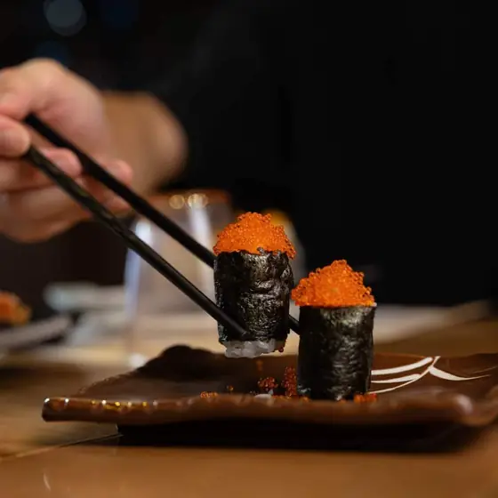
Gunkan de masago
2 piezas
California de salmón
4 piezas
California de salmón, con aguacate y sésamo.
California de salmón Philadelphia
4 piezas
California de salmón con aguacate, sésamo y Philadelphia.
California Veggie + Salmón
4 piezas
California con Philadelphia, pepino, sésamo, salmón y salsa unagi.
California de salmón cocido
4 piezas
California con salmón cocido, sésamo y Philadelphia, salsa teriyaki y almendras.
California Ebiten
4 piezas
California con gamba en tempura, con almendra y kataifi.
California Tigre
4 piezas
California con gamba en tempura, con salmón y kataifi.
California Feel Good
4 piezas
California de gamba en tempura con rice krispies, queso y fresa y salsa fresa.
California Roll
4 piezas
California de aguacate, con surimi, pepino y sésamo.
California Miura
4 piezas
California de salmón cocido, Philadelphia, pepino, sésamo y salsa unagi.
California Sake Fresa Roll
4 piezas
California de salmón, aguacate y queso con fresa fresca y salsa de fresa.
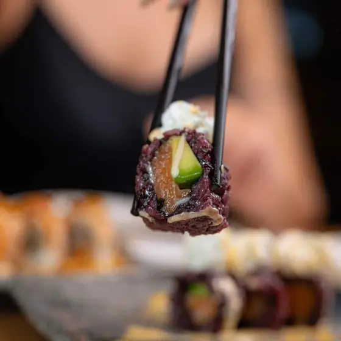
Black California Black Picante
4 piezas
Black California de salmón, aguacate, queso y mayonesa picante.
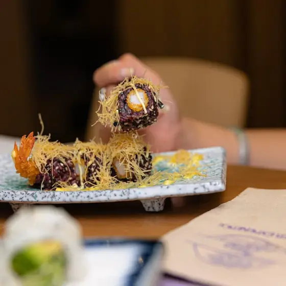
Black California Vulcano
4 piezas
Black California de gamba en tempura, con mayonesa kataifi.
California atún picante
4 piezas
California de atún, aguacate y sésamo.
California Cream Atún
4 piezas
California Ebi con mini tartar de atún, almendras y mayonesa Kaisen.
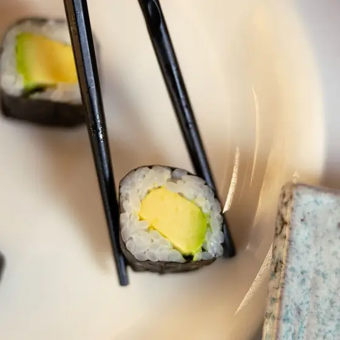
Maki veggie
8 piezas
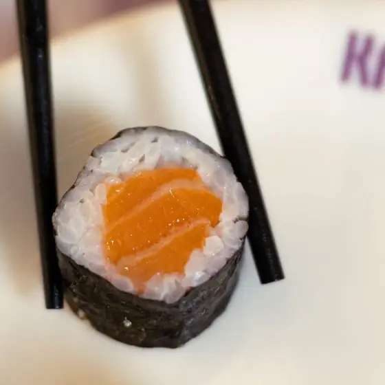
Maki salmón
8 piezas
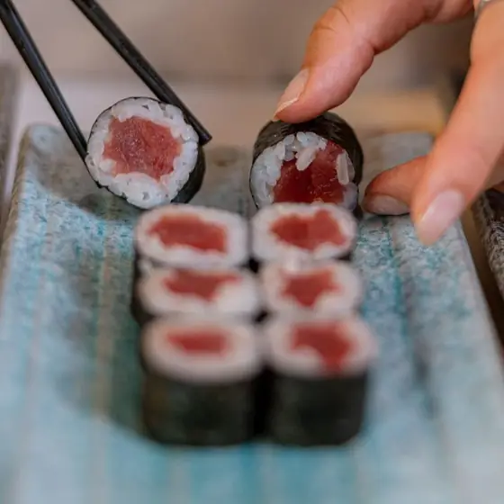
Maki atún
8 piezas
Hoso miss tempura
4 piezas
Hosomaki rollo frito con salmón, queso Philadelphia, kataifi y salsa teriyaki.
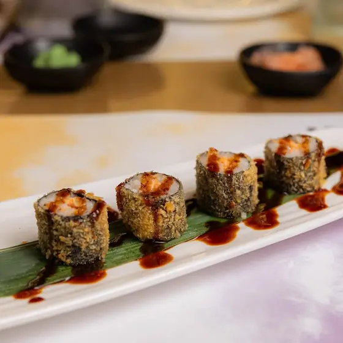
Hoso maki tempura
4 piezas
Hosomaki rollo frito con salmón y salsa teriyaki.
Hoso frito mango
4 piezas
Hosomaki rollo frito con mango, queso Philadelphia y salsa de mango.
Hoso frito fresa
4 piezas
Hosomaki rollo frito con fresa fresca, queso Philadelphia y salsa fresa.
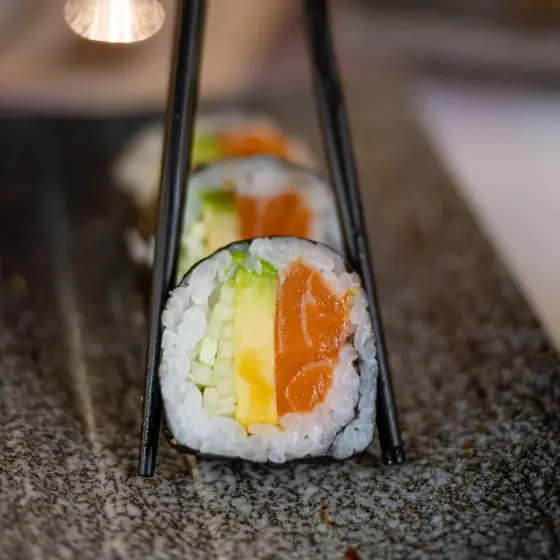
Futomaki salmón
5 piezas
Futo con salmón, aguacate y pepino.
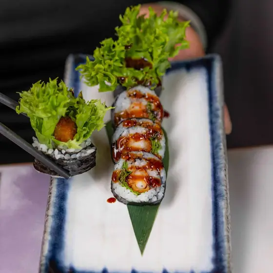
Futomaki Ebiten
5 piezas
Futo con gambas fritas y lechuga.
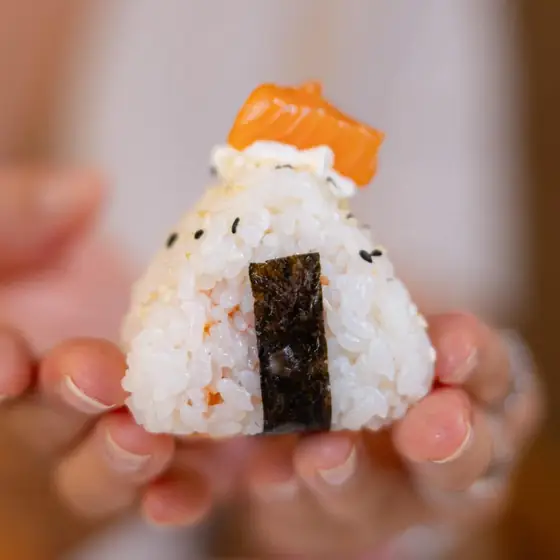
Onigiri de salmón picante
1 pieza
Onigiri de salmón cocido, cebolla y sésamo con salsa picante.
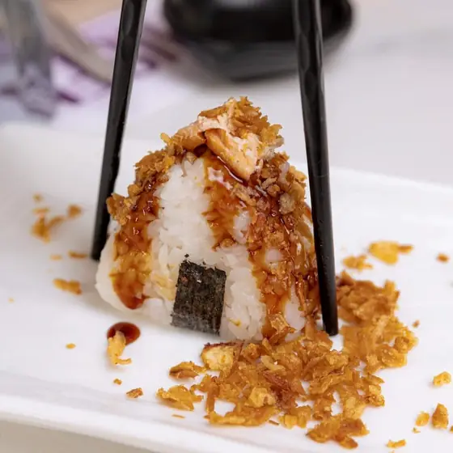
Onigiri de salmón cocido
1 pieza
Onigiri de salmón cocido con Philadelphia, salsa unagi y cebolla frita.
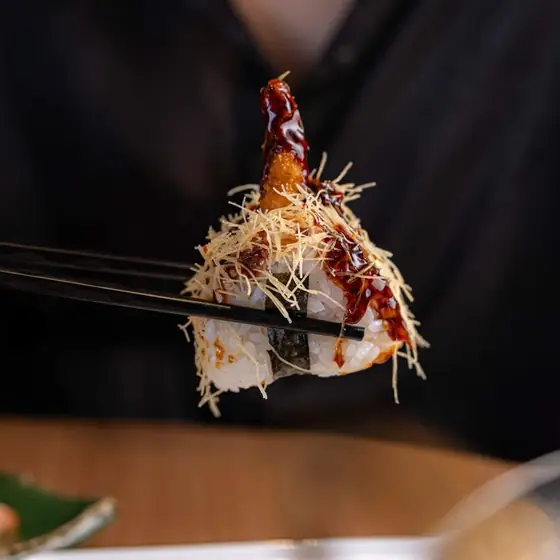
Onigiri Ebi
1 pieza
Onigiri de gambas fritas con Philadelphia, kataifi y salsa unagi.
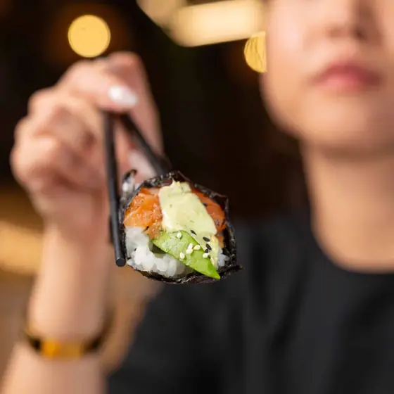
Temaki de salmón
1 pieza
Cono de salmón con aguacate, sésamo y salsa rúcula.
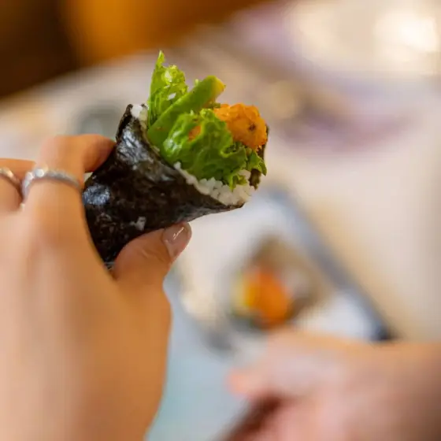
Temaki Ebi
1 pieza
Cono con ebi, ensalada y mayonesa, kataifi.
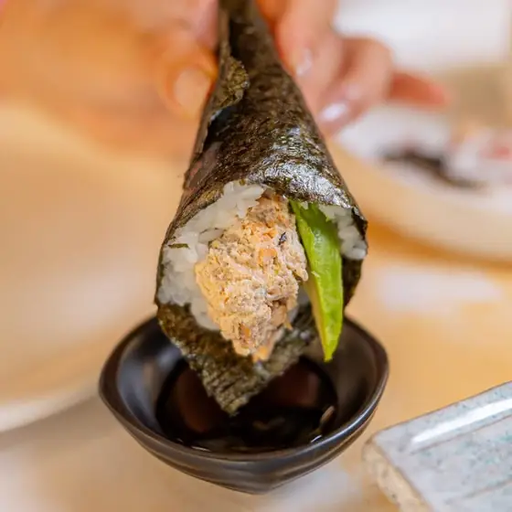
Temaki de salmón cocido
1 pieza
Cono con salmón cocido, queso Philadelphia, cebolla crunch y salsa japonesa.
Estos platos solo salen en el menú de noche (lunes a jueves) y en el de fin de semana y festivos.
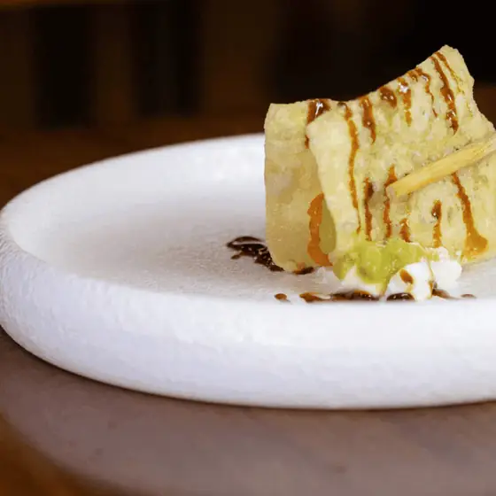
Avocado Crispy
1 pieza
Crujiente bocado de guacamole y salmón.
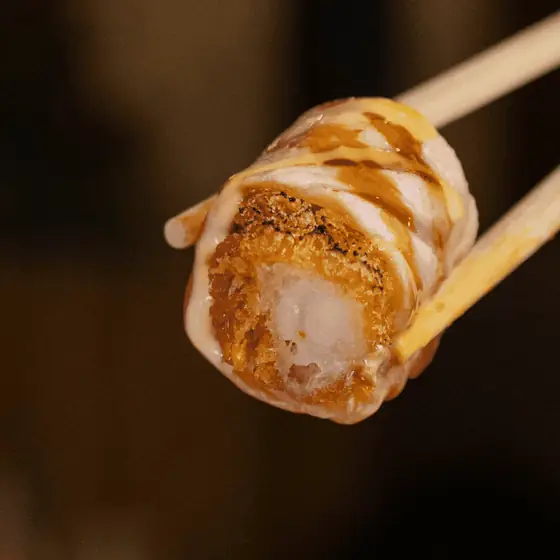
Gunkan Ebi
2 piezas
Gunkan de ebi y salmón.
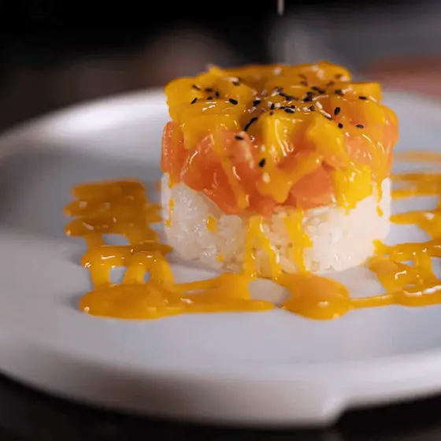
Mango cake
Tartar de salmón con mango, sésamo y salsa de mango.
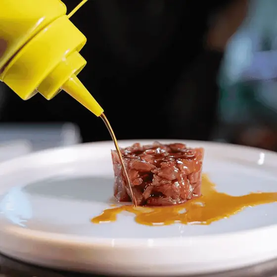
Atún cake
Tartar de atún con salsa japonesa dressing, wasabi y sésamo.
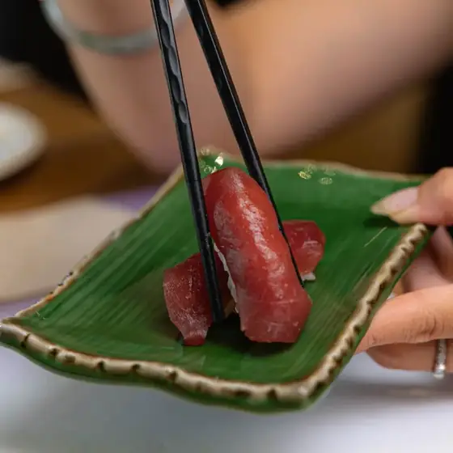
Nigiri de atún
2 piezas
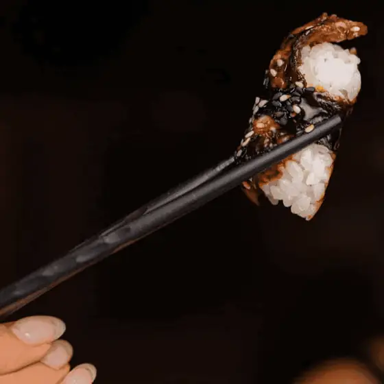
Nigiri de anguila
2 piezas
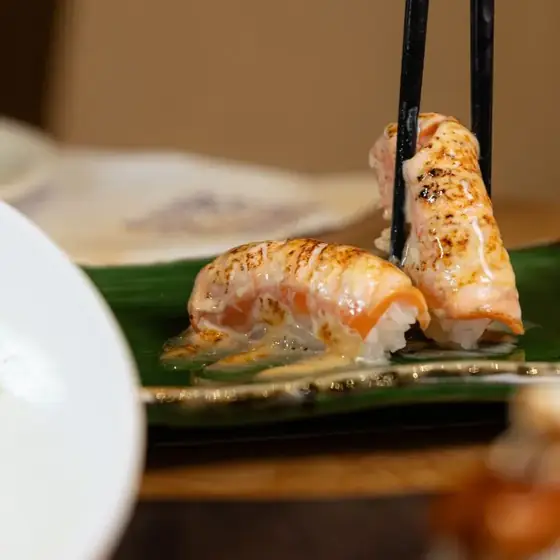
Nigiri de salmón fumé a la trufa
2 piezas
Nigiri de lubina flameado
2 piezas
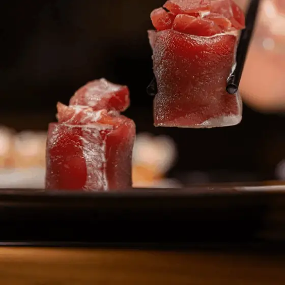
Gunkan de atún a la trufada
2 piezas
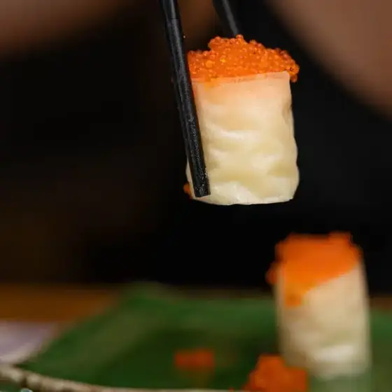
Gunkan tobiko
2 piezas
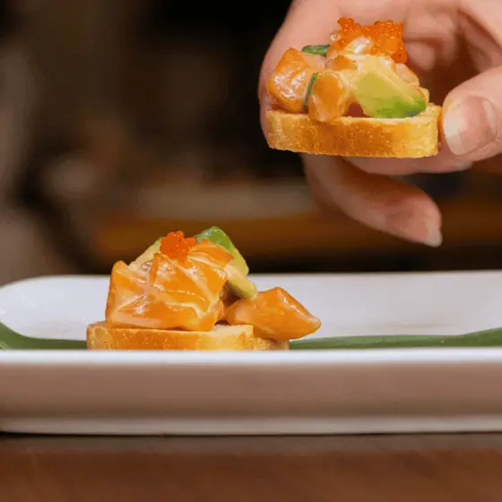
Tosty de salmón
2 piezas
Tostaditas de aguacate, salmón y masago.
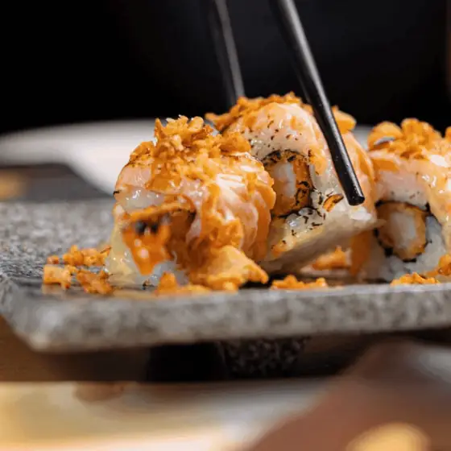
California Especial Picante
4 piezas
California con gamba en tempura con salmón, cebolla frita y salsa japonesa picante.
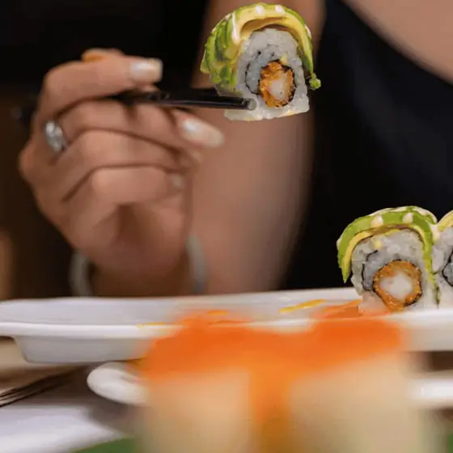
California Dragón Picante
4 piezas
California de gamba en tempura con aguacate y salsa de mayonesa picante.
California León
4 piezas
California de gamba en tempura con salmón, rice krispies y salsa trufa.
California Sake Mango Roll
4 piezas
California de salmón, aguacate y queso con mango fresco y salsa de mango.
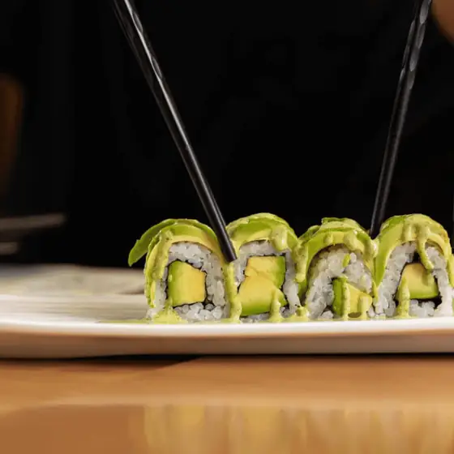
California Aguacate Roll
4 piezas
California de aguacate.
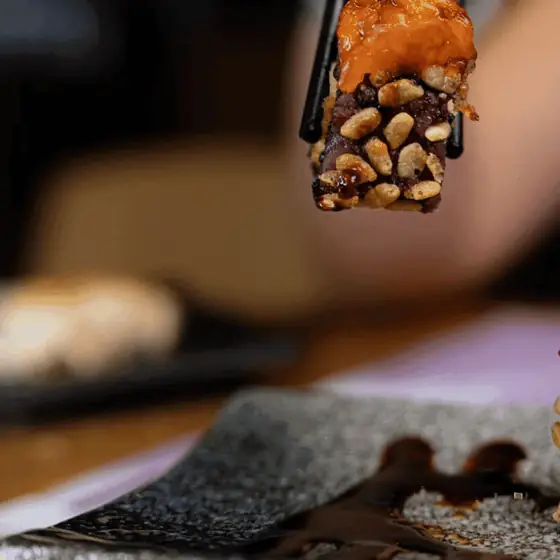
Black California México
4 piezas
Black California de gamba en tempura, con rice krispies, salmón y salsa japonesa.
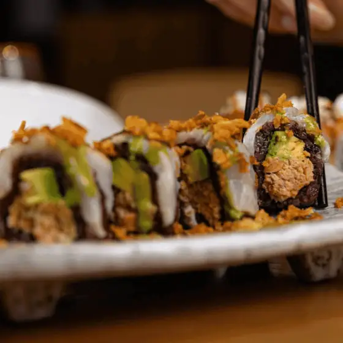
Black California Maratica
4 piezas
Black California de salmón cocido, aguacate, lubina, salsa rúcula y cebolla crunch.
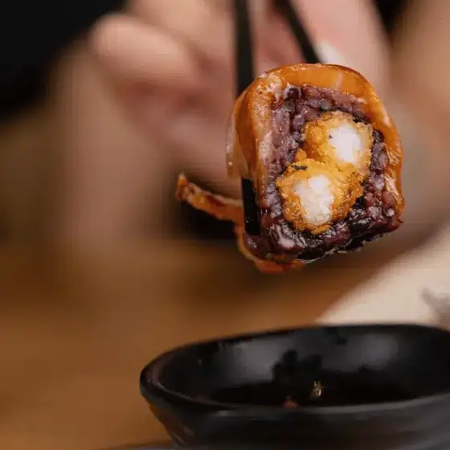
Black California Italia
4 piezas
Black California de gamba tempura, salmón con salsa japonesa.
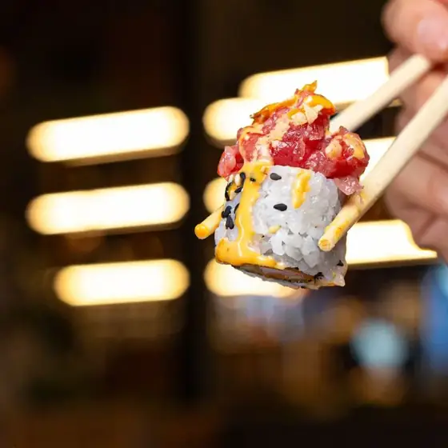
California Tartar Atún
4 piezas
California Ebi con mini tartar de atún, almendras y mayonesa Kaisen.
California Cream Atún
4 piezas
California Ebi con mini tartar de atún, almendras y mayonesa Kaisen.
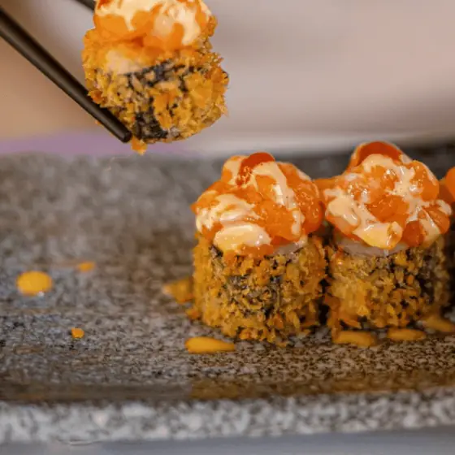
Hoso frito picante
4 piezas
Hosomaki rollo frito de salmón, doritos y picante.
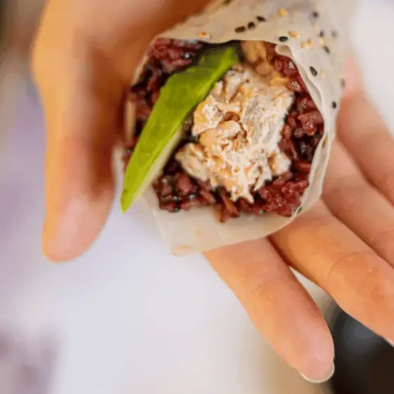
Temaki Sea
1 pieza
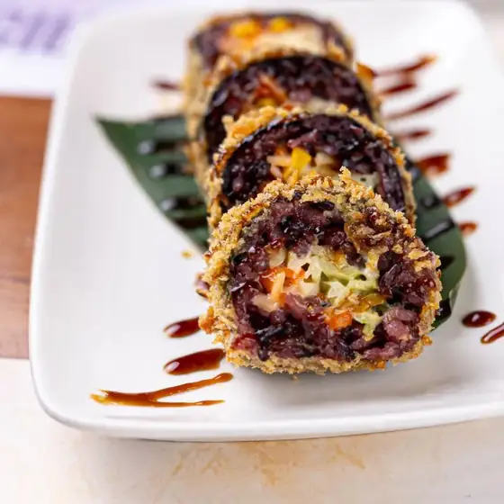
Hoso Explosivo
4 piezas
Hoso frito black con pepino, maíz, surimi, tobiko y salsa de anguila.
Nigiri de res flameado
2 piezas
Nigiri con carne de res flameado, salsa de anguila y cebollino.
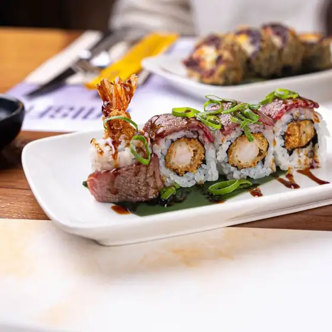
California Ebi y Res
4 piezas
California de ebi y carne de res flameado, con salsa de anguila y sésamo.
California Cheese
4 piezas
California de ebi con una lámina de queso flameado con salsa de anguila.
California Volcán
4 piezas
California de ebi con surimi, maíz y tobiko, con salsa de anguila y mostaza.
California Boom
4 piezas
California con salmón cocido, aguacate, lámina de salmón, lámina de queso, salsa de anguila y pistacho.
Gamba en tempura
2 piezas
Tempura de gamba ebi.
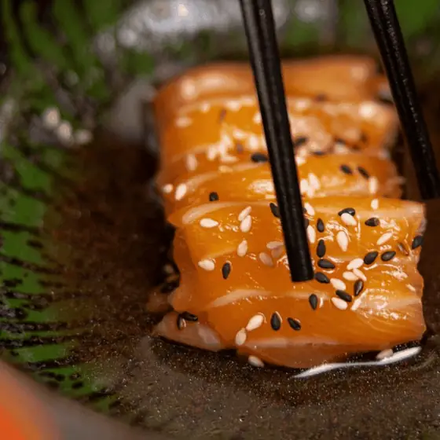
Ceviche Sake
Carpaccio de salmón con perejil y aceite de Ponzu.
Sushi pasado por la brasa de carbón Josper: el toque ahumado que no encontrarás en otro buffet.
Sushi Josper de pollo
Sushi a la brasa Josper con pollo, queso en crema, mango, salsa teriyaki y provolone.
Puede contener trazas
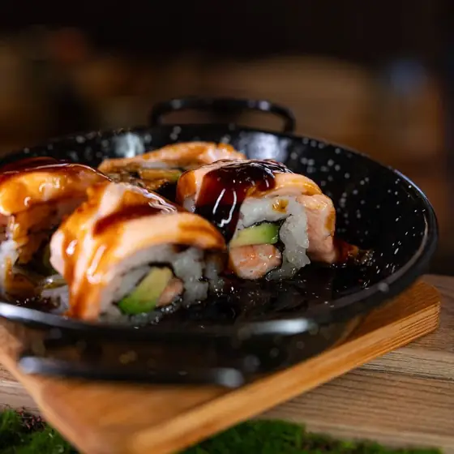
Sushi Josper de salmón
4 piezas
Sushi a la brasa con salmón ahumado, aguacate, crema de queso, salsa unagi.
Puede contener trazas
Carnes, marisco y pulpo al Josper, el horno de brasa de carbón.
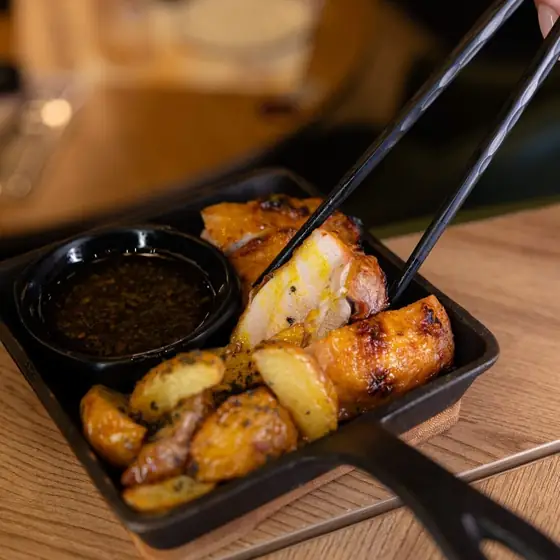
Churrasco de pollo secreto
Churrasco de pollo con salsa de miel de flor y mostaza.
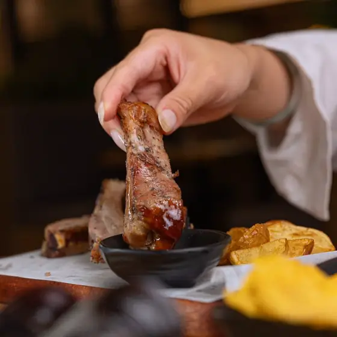
Costilla de cerdo a la brasa
2 piezas
Costilla de cerdo al Josper acompañado de patatas y salsa barbacoa.
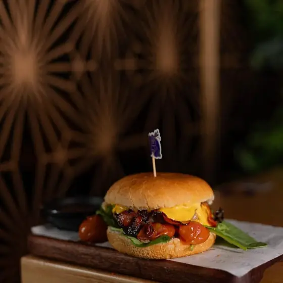
Hamburguesa Kaisen
Hamburguesa Angus con mezcla de brotes tiernos de lechuga (brotes de lechuga de diferentes colores, rúcula), espinaca, tomate Cherry, queso cheddar, mayonesa chimichurri, barbacoa, cebolla caramelizada, bacon.
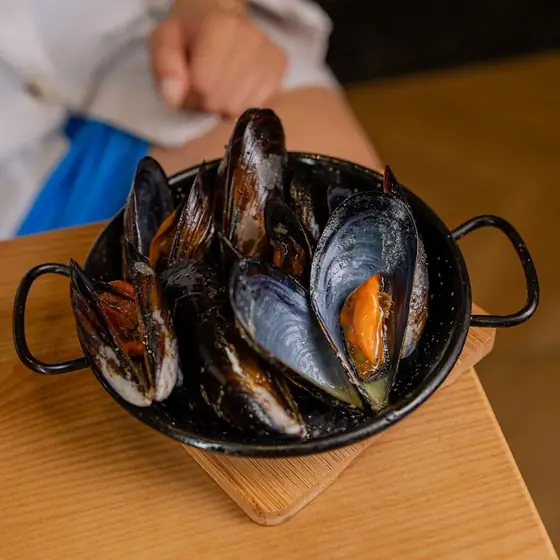
Mejillón a la brasa
Mejillones a la brasa con salsa.
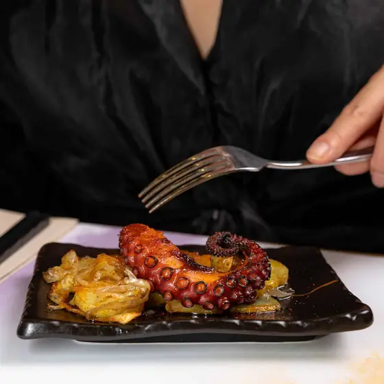
Pulpo al Josper
Pulpo a la brasa con patatas y cebollas al Josper.
Churrasco de ternera a la brasa
2 piezas
Churrasco de ternera al corte argentino con patatas fritas al Josper.
Almeja blanca
Almeja con salsa de perejil.
Sepia a la brasa
1 pieza
Sepia a la brasa Josper con alioli de ajo y perejil.
Brioche Kaisen
Suave y esponjoso pan de brioche con salsa especial del chef.
Para abrir boca mientras llega el sushi.
Ensalada Kaisen
Ensalada con variedad de brotes tiernos, toques de frutas y frutos secos de temporada.
Wakame
Ensalada de algas wakame, agar-agar y sésamo.
Nachos con queso
Una irresistible combinación de nachos crujientes cubiertos con queso mozzarella derretido, salsa cheddar y bacon crujiente.
Langostino cocido con salsa
4 piezas
Gambas cocidas con cebollino, con salsa para acompañar.
Edamame
Ración mediana. Habas de soja.
Pan bao Ebi
Pan bao de gamba rebozada.
Pan bao laqueado
1 pieza
Pan bao al estilo pato laqueado.
Pato laqueado
Crep con pepino, salsa de marisco, pato y cebollas verdes.
Tartares montados en el momento.
Salmón cake
Tartar de salmón con aguacate, mango, sésamo y salsa de mayonesa y salsa de anguila.
Puede contener trazas
Black cake
Tartar de arroz negro con salmón, aguacate, toque de frutos secos de temporada y salsa japonesa.
Puede contener trazas
Salteados al wok, sopas y dim sum al vapor o a la plancha.
Arroz de la casa
Arroz salteado con maíz, pollo Josper, zanahoria, huevo y cebolla china.
Tallarines de udon
Tallarines con pollo, brotes de soja, zanahoria, huevo, pimiento verde, pimiento rojo y salsa de Kaisen udon.
Ramen
Ramen con caldo, ternera, verdura y huevo.
Sopa de miso
Sopa de miso, tofu, algas, naruto y cebollino.
Ternera con salsa de ostra
Ternera con zanahoria, cebolla, pimiento verde, pimiento rojo y salsa ostra.
Pollo gonbao
Pollo gonbao, zanahoria, pepino, cacahuete, ajo, pimiento seco y salsa picante.
Pan rabbit
2 piezas
Pan chino relleno de una crema de huevo, con un sabor dulce pero suave.
Repollo a la sartén
Repollo con ajo, carne de cerdo y salsa picante.
Calamar a la sartén
Rejo de calamar con cebolla, pimiento verde, pimiento rojo, zanahoria, ajo y salsa picante.
Gyozas de gamba
4 piezas
Gyozas de gamba.
Shaomai
4 piezas
Empanadillas de cerdo.
Dumpling
4 piezas
Empanadillas de cerdo con verdura.
Gyozas plancha
4 piezas
Gyoza de cerdo y verdura a la plancha.
Lo crujiente de la casa.
Bravas al estilo japonés
Patatas bravas con mayonesa wasabi y salsa japonesa.
Patatas fritas
Croquetas ibéricas
2 piezas
Takoyaki
2 piezas
Croqueta de calamar desmenuzado con salsa teriyaki.
Costilla crujiente
Costilla crujiente con salsa chili.
Pollo limón
Pollo rebozado con salsa de limón.
Rollito primavera
2 piezas
Rollito de primavera con zanahoria, cebolla, pimiento, repollo y ternera.
Pan chino
2 unidades
Pan chino frito recubierto de una capa extra de glaseado para realzar el sabor.
Verduras, brochetas y gambón a la plancha.
Espárragos a la plancha
Setas de paja a la plancha
Champiñones a la plancha
Calabacín asado a la plancha
Pimientos verdes y rojos a la plancha
Cebolla a la plancha
Brócoli a la plancha
Brocheta de pollo a la plancha
Brocheta de ternera a la plancha
Gambón a la plancha
Incluidos en el buffet pagando un pequeño suplemento, según el turno.
Nigiri gamba roja y masago
2 piezas
2,50 € por ración en todos los menús
Nigiri foie con mango
2 piezas
2,50 € por ración en todos los menús
Gamba cruda roja
2 piezas
2,50 € por ración en todos los menús
Sashimi de salmón
4 piezas
Mediodía: 2 € por ración
Noche y fin de semana: 2 raciones incluidas, después 2 € por ración
Sashimi de atún
4 piezas
Mediodía: 2 € por ración
Noche y fin de semana: 1 ración incluida, después 2 € por ración
Sashimi de lubina
4 piezas
Mediodía: 2 € por ración
Noche y fin de semana: 1 ración incluida, después 2 € por ración
Sashimi mixto
3 piezas
Sashimi de salmón, lubina y atún flameado con salsa de maracuyá, sésamo y cebollino.
Mediodía: 2 € por ración
Noche y fin de semana: 1 ración incluida, después 2 € por ración
Sashimi Triple Atún
3 piezas
Sashimi de atún flameado, con mango, salsa ponzu, cebollino y sésamo.
Mediodía: 2 € por ración
Noche y fin de semana: 1 ración incluida, después 2 € por ración
Sashimi Triple Salmón
3 piezas
Sashimi de salmón flameado, salsa ponzu, cebollino y pistacho.
Mediodía: 2 € por ración
Noche y fin de semana: 1 ración incluida, después 2 € por ración
Sashimi Exótico
3 piezas
Sashimi mixto de salmón, lubina y atún, salsa de mango, cebollino y sésamo.
Mediodía: 2 € por ración
Noche y fin de semana: 1 ración incluida, después 2 € por ración
Entrecot a la brasa
Entrecot a la brasa acompañado de patatas y salsa chimichurri.
Mediodía: 1,50 € por ración
Ostras
2,50 € por ración en todos los menús
Vieira a la brasa
2 piezas
2,50 € por ración en todos los menús
Gamba al ajillo
Gamba con salsa al ajillo con emulsión de berenjena, pimiento y puerro a la brasa.
Mediodía: 1,50 € por ración
Noche y fin de semana: sin suplemento
Los postres de la casa se cobran aparte, a precio de carta.
Resaca en Tailandia
Un postre inspirado en los vibrantes sabores de las noches tailandesas: un exótico coco con notas cítricas que equilibran a la perfección lo dulce, lo ácido y lo cremoso. Un sutil toque picante realza su esencia tropical, despertando los sentidos con cada bocado.
Hippo Infancia
Un helado que te transporta a la infancia, con el icónico Happy Hippo como protagonista, sobre una base de cremoso helado de chocolate blanco y avellana. Una combinación irresistible de dulzura, textura y nostalgia.
Terreta de Kaisen
Un postre cítrico inspirado en la terreta, que juega con distintas capas de textura para ofrecer un equilibrio entre frescura, cremosidad y crujiente.
Coulant matchada
Un clásico coulant de chocolate con un toque de vainilla, que revela un centro cremoso.
Strawberryland
Fresas al Josper, realzando su dulzura natural con sutiles notas ahumadas, acompañadas de una suave nata montada casera y un toque cítrico que equilibra y refresca.
Sueño tropical
Una jugosa piña infusionada con sutiles notas de ron y canela. Se corona con un cremoso helado de ron con pasas, creando un postre equilibrado entre el ahumado, lo especiado y lo refrescante.
Se cayó la sorpresa
Un crujiente cono de cremoso helado de pistacho, acompañado de fresa y chocolate blanco, que aportan un equilibrio perfecto entre lo dulce, lo frutal y lo tostado.
Tentación de violeta
Una deliciosa galleta waffle con helado de violeta, crujiente por fuera y suave por dentro, acompañada de una manzana caramelizada al wok, que aporta un toque ácido y afrutado. Para un extra de dulzura, se añade un irresistible sirope de chocolate blanco y dulce de leche.
Kaisen Cheesecake
Una tarta de queso única que fusiona la cremosidad del queso con el toque caramelizado y jugoso de nuestras uvas al wok, creando un equilibrio perfecto entre dulzura, frescura y textura.
Helado de pistacho
Helado de avellana
Helado de chocolate blanco
Helado de vainilla
Helado de violeta
Sorbete de mandarina
Mochi cheesecake
Mochi pistacho
Mochi oreo
Mochi matcha
Lacasitos huevo sorpresa
Vasito con helado sabor vainilla, huevo Lacasitos® y doble sorpresa en su interior.
Coctelería de autor, también sin alcohol. Precio en el local.
Fujin
Enérgico y refrescante, con un equilibrio perfecto de sabores verdes. Combina la suavidad del vodka con la frescura del kiwi, el toque cítrico de lima, y la nota aromática del té matcha con pandan.
Kaisen
Representación de la cultura japonesa, que combina Gin Bombay Sapphire con la dulzura de la fruta de la pasión, el toque aromático del panal de miel, la chispa del jengibre y la frescura del zumo de lima.
Hikari
Exótico, vibrante y lleno de sabor, este cóctel es multi-premiado. Gin Roku con cítricos, Martini Fiero y espuma de fruta de la pasión y yogur. Una experiencia única y refrescante! by @denis_chequebarman.
Nozomi
El lado más fresco de Japón: yuzu fresco, cereza dulce, un delicado toque de flor de sakura y el amargor herbal del bitter de shiso. No necesita alcohol para ser inolvidable.
Suika Mojito
Una versión japonesa del mojito, con ron Bacardi Carta Blanca, lima, hierbabuena y jugosa sandía. Burbujas suaves realzan su frescura, en un cóctel vibrante y exótico con alma oriental.
Yugen Margarita
Un cóctel tropical con un toque ligeramente picante y una personalidad fuerte. Elaborado con Tequila Cazadores, piña de Costa Rica, chile verde poblano y un toque de sal Tajín.
Pandañita Colada
Deliciosa versión de la clásica Piña Colada, enriquecida con especias caribeñas que le aportan un toque cálido y exótico, Además, cuenta con un sutil toque de pandan, que le da un brillo y aroma únicos.
Mango Ruri
Una bomba tropical. Mango fresco y bien maduro, jengibre que pica con cariño. Textura granizada y con espirulina azul. Una versión de cóctel smoothie de fantasía.
No hay platos que coincidan. Prueba con otra palabra o quita algún filtro.
Alergias e intolerancias: todos los platos se preparan en la misma cocina y puede haber contaminación cruzada. Antes de pedir, consulta al personal de sala los alérgenos de cada plato.
Comida y cena, todos los días de la semana. La cocina cierra media hora antes que el local.
Cocina: 13:00-16:00 y 20:00-23:00.
Las reservas son para el primer turno de comida y de cena. Después se atiende por orden de llegada.
Si venís en grupo grande, mejor llámanos al 944 412 052 y lo organizamos.
Si cambia el número de comensales, avísanos antes: el local puede cancelar una reserva que no coincide.
(Demostración: no se ha enviado ninguna reserva)
En el Centro Comercial Ballonti, Avenida Ballonti 1, 48920 Portugalete, a unos 15 minutos del centro de Bilbao. En metro, línea 2 hasta la estación de Portugalete; en coche, por la A-8, salida Barakaldo/Sestao.
Sí. Se aparca gratis en el parking del Centro Comercial Ballonti.
Las dos cosas: es un buffet libre servido a la carta. Pides desde la tablet de la mesa, sin límite, y cada plato se prepara al momento. Recomendamos pedir unos 5 platos por persona en cada ronda para no desperdiciar comida.
Los niños de entre 100 y 140 cm de altura tienen menú infantil: 12,95 € a mediodía de lunes a viernes, 13,95 € por la noche de lunes a jueves y 14,95 € el viernes noche, fines de semana, festivos y vísperas. Los menores de 100 cm no pagan.
No. Cada persona toma el menú buffet y una bebida, que se paga aparte.
Avísanos antes de pedir. Todos los platos se preparan en la misma cocina, así que puede haber contaminación cruzada; el personal de sala te confirma los alérgenos de cada plato.
Sí, pero los grupos grandes se gestionan por teléfono: llámanos al 944 412 052.